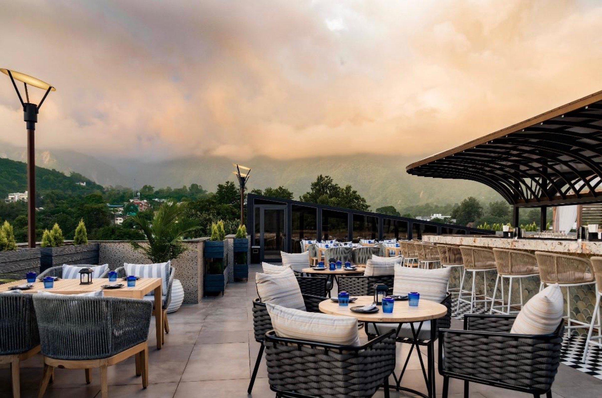
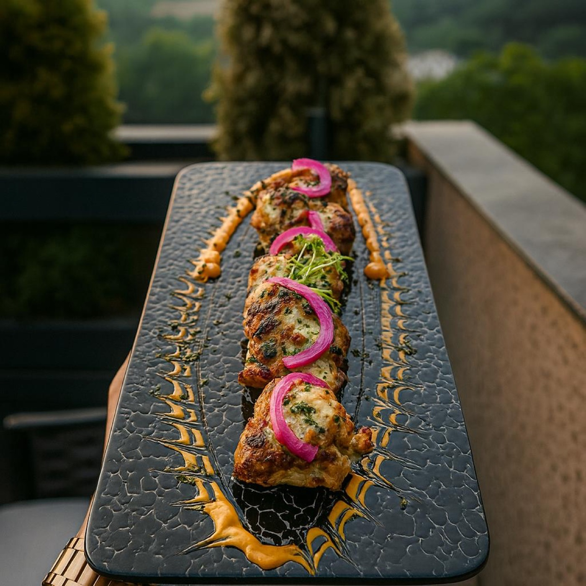
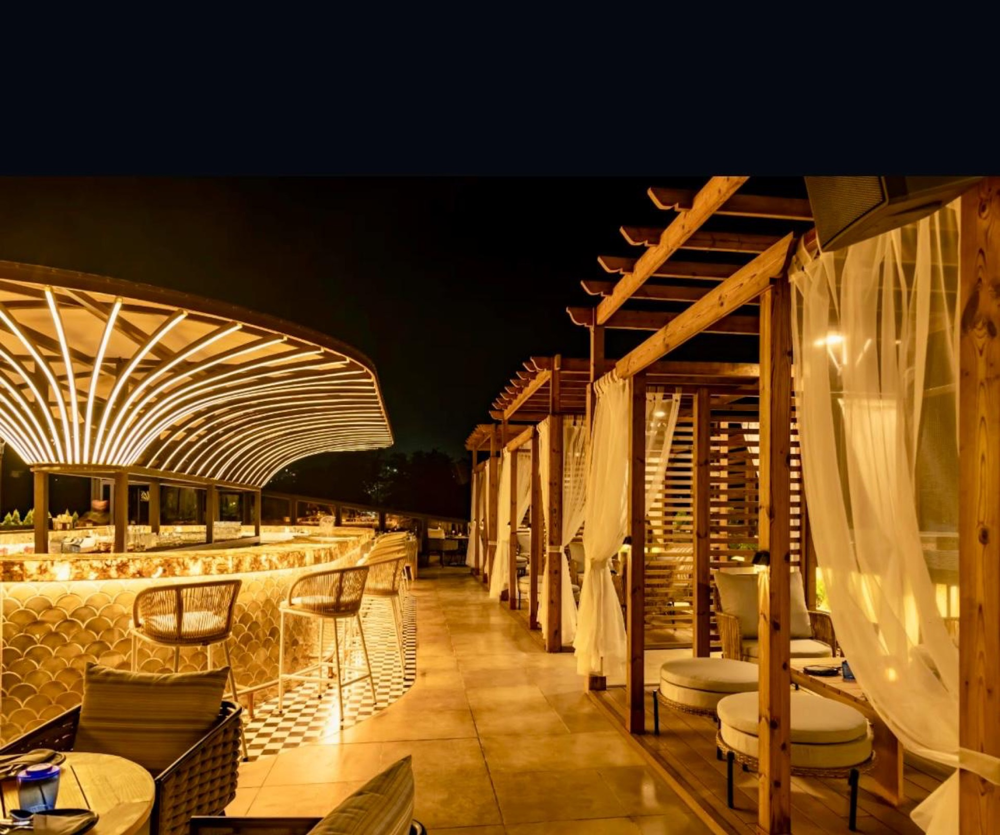
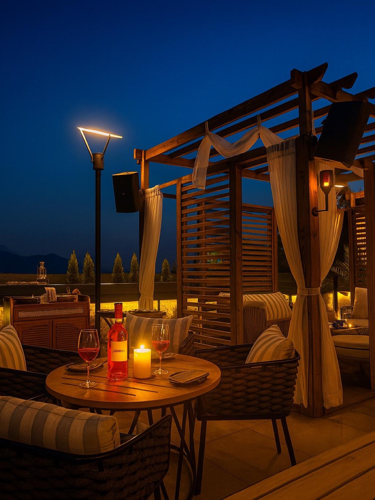
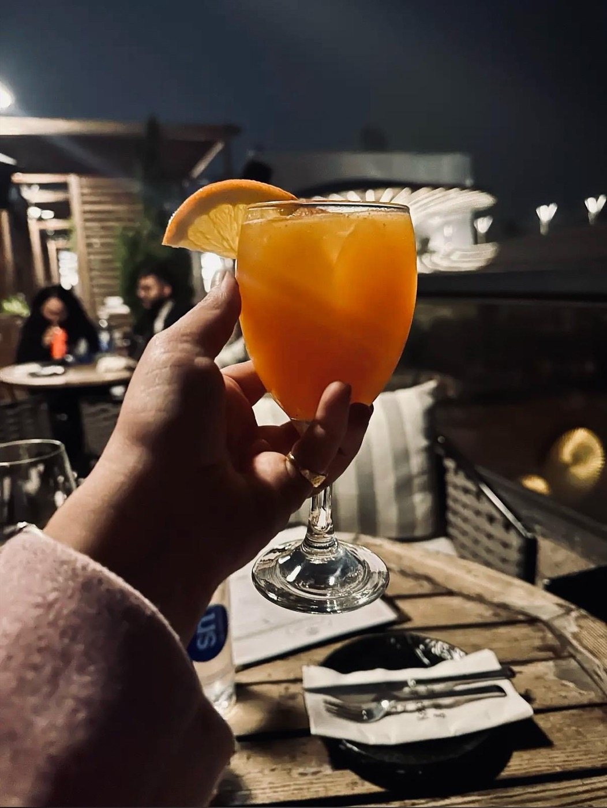
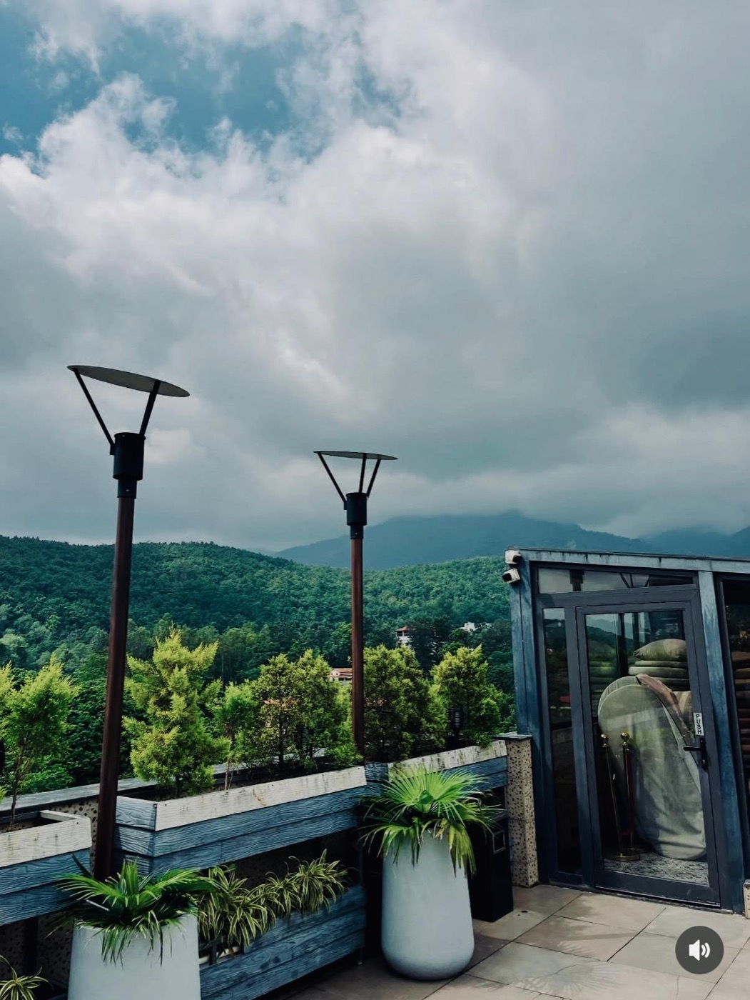
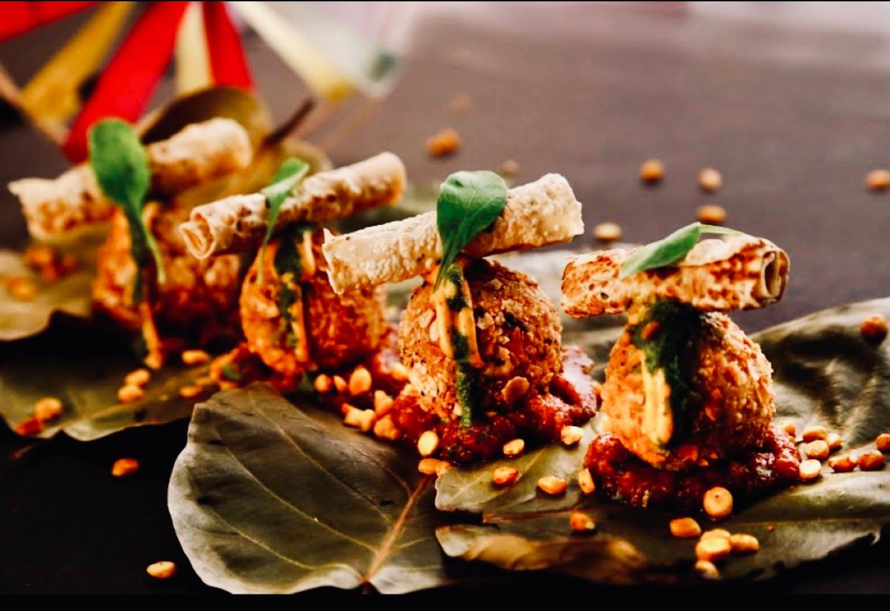

Best Café in Dehradun, Honestly Ranked
Where the team here actually goes on days off. Three or four cafés in rotation. The honest list.
Read →City guides, recipes from the kitchen, cocktail histories from the bar, and stories from a season of birthdays we won't forget.

Where the team here actually goes on days off. Three or four cafés in rotation. The honest list.
Read →
From bun-tikki at dawn to Farzi at dinner. The way locals eat the city.
Read →
Why a rooftop here is different from a rooftop in Mumbai or Delhi. A love letter to the Doon sunset.
Read →
From a 75th birthday with three generations of toasts to a proposal that worked. Six stories from our events team.
Read →
A bar-by-bar guide to Dehradun's cocktail scene. Where to drink and what to order, from our bar manager.
Read →
A walking guide to Dehradun's most beautiful street. Eat, drink, walk and end on our rooftop.
Read →
How a Sunday afternoon meal in a Lucknow home became our most-photographed small plate.
Read the Story →From Char Dukan momos to Doon's hidden bun-tikki carts — the city's best bites, mapped by our team.
Read the Guide →The full recipe, including the curry-leaf cordial that gives this drink its distinctive South Indian funk.
Read & Mix →More stories every month. Follow us on Instagram @farzicafedehradun for daily updates from the kitchen.